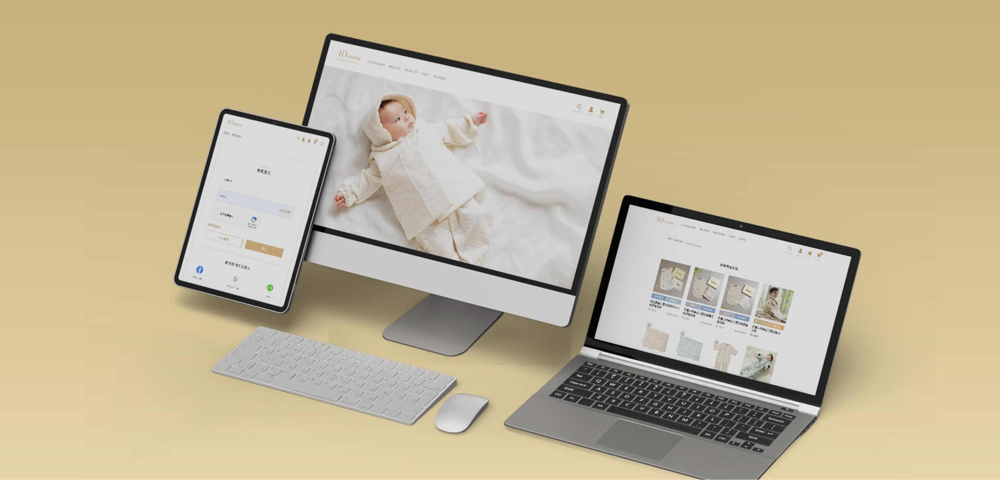
曝光總數：
30.3萬
應用裝置：
Pad / Mobile
製作時間：
4 months
上線日期：
2021.07.01
前期研究
專案介紹
Hoppetta是來自日本Ficelle旗下的母嬰品牌，為了同步日本官網改版，加上原台灣網站版型老舊，無響應式設計，考量給用戶更好的體驗，進行全新架構及視覺的優化。
負責項目
競品分析、訪談需求、規劃流程、介面設計、交互作用設計、易用性測試
團隊成員
1位專案 / 1位UIUX設計師 / 1位前端工程師 / 1位後端工程師
01.我的貢獻
此專案是我第一個完全獨立製作的大型購物網站，訪談後了解目標受眾的需求，根據反饋重新調整整體流程規劃，介面設計更為簡潔易懂，使得用戶能夠更直觀地使用網站並降低學習曲線，讓新用戶能快速上手。 後續與客戶進行易用性測試，找出設計盲點並進行調整。
02.面臨的挑戰
目標受眾主要為28歲至45歲的母親，她們在育兒方面非常繁忙，因此在購物時更講求簡單與效率，在查找產品和下單的過程中，快速引導用戶找到所需商品是重點，以降低流失率並提高轉換率。 設計購物車流程，需簡化步驟但同時又能確保填寫的必要信息不會過少。如何在這兩者之間找到平衡，將是團隊需要突破的挑戰。
03.結果與影響
網站改版後客服人員回饋顯示，針對網站操作問題的詢問頻率下降了約50%。大部分用戶現在都能輕鬆上手並順利下單，快速查找到所需產品。此外，觸及人數在半年內達到了30.3萬，相較於改版前增長了約50%，不僅提升了用戶體驗，也顯著增加了平台的曝光率和使用率。
設計流程
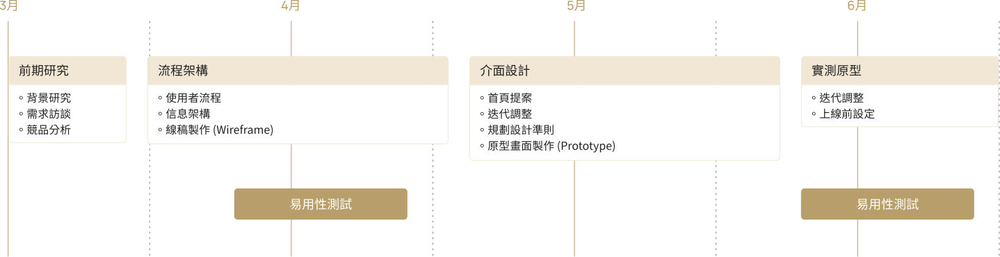
訂定專案目標
因TA多為網路購買，在會員註冊及購物車流程為本次重點項目，考量用戶族群多為忙碌的家題主婦，操作流程上以簡約、快速為主要目標。
-
快速註冊
-
便捷下單
-
簡約介面
-
購物型網站
痛點項目
經過與客服人員及行銷專員訪談後，整理使用回饋如下：
過時版面：風格老舊影響年輕族群的黏著度，無響應式裝置設計。
操作流程：填寫資料分過多步驟頁面，換頁等待時間耗時。
刷卡錯誤：刷卡失敗時無法重新付款，需重新下訂單。
註冊繁瑣：填寫過多欄位資料，降低加入會員的意願。
選單優化：因產品數量很多，舊選單過於簡略，無法快速瀏覽產品類別。
競品分析
針對規模差不多的旅行社進行優缺點分析
優化亮點
經過訪談與競品分析後，加上客戶財務預算討論，確認本次優先修正項目：
01
介面簡潔、資訊清楚明瞭
統一日本官網風格，移除裝飾設計，圖片與文字比例調整。
02
簡化下單步驟流程
下單流程簡化成兩步驟，減少換頁等候時間。
03
新增重新付款按鈕
如付款失敗，可於訂單列表頁執行重新付款的動作。
04
優化會員註冊流程
改為僅需填寫帳號密碼，待信箱驗證成功即可完成註冊。
05
追蹤會員資料
取消非會員購物，不利於管理會員訂單及推銷優惠廣告。
06
購物車操作優化
因資料整合填寫訂單頁面較長，將下單按鈕釘選，清楚區隔各段落區塊。
07
通用一致性
制定設計系統，方便後續人員維護網站。
主要目標
優化既有客群的使用體驗，增加產品的市場滲透率。
溫暖陪伴幼兒成長，給辛苦的媽媽們輕鬆愉悅的購物體驗。
用戶流程
點擊圖片可放大檢視內容
{kind=link}
{kind=link}
網站架構圖
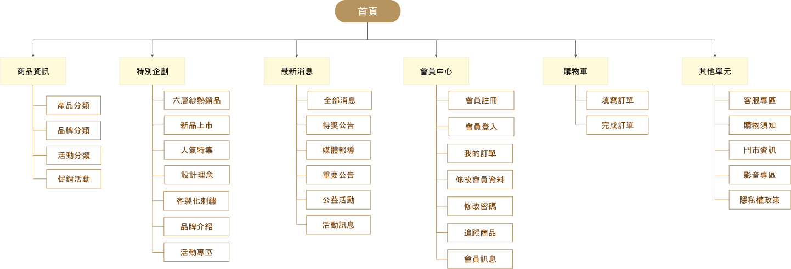
易用性測試結果
依照研究結果，繪製線稿流程，並進行第一次易用性測試。
因版面關係僅列出重點反饋
-
改版前畫面
痛點
產品頁面排版過於雜亂，易讀性差。
客戶不喜歡裁切對半的視覺，左側不要放置品牌LOGO干擾產品圖，另外還需加其他分類頁籤，區分促銷活動與主題類別的不同，將右側資訊樣式區分清楚。
設計解方
移除背景設計，專注於產品圖
移除背景設計，左側只專注於產品圖，右側則是所有產品資訊，避免混淆內容。
促銷活動有設計連結的功能，使用框底按鈕形式，類別則可自行設定底色。因考量會有太多方形設計，需改變加值服務及收藏按鈕樣式。 -
改版前畫面
痛點
不喜歡分太多步驟頁，另外考量訂單維護問題，取消非會員購物。
用戶多為繁忙的媽媽們，希望可以一次填完所有資料，檢查確認時也不用來回切換，減少步驟頁帶來的煩躁感，另外非會員訂單造成客服人員管理困難。
設計解方
前兩步驟頁面合併
將前兩步驟頁面合併，商品明細移除第一步驟文字顯示的區塊，保留第二步驟調整數量的功能。購買規則改成未登入前可將商品加入購物車，但需登入會員才可以接續下單作業。
-
改版前畫面
痛點
增加國際物流機制，收件地址影響運費及付款方式，擺放位置邏輯錯誤。
按鈕樣式與輸入框樣式過於接近，容易混淆。客戶開通國際物流服務，收件地區如為國外地區或是超商取貨，付款方式及收件地址欄位會不同，需將運送區域放到兩者之前。
設計解方
按鈕樣式調整，區塊位置調整
因使用radio button沒有辦法執行即時觸發機制，導致程式無法進行欄位判斷，運送區域改使用下拉功能，付款方式因爲必填機制，使用radio button，發票按鈕新增打勾符號區分點擊前後樣式不同。
首頁風格提案
針對第一階段測試回饋，設計兩種風格，最後客戶希望風格與日本官網統一採用A版。
A版-最終選定版本
專業版本，延伸日本官網簡潔風格。
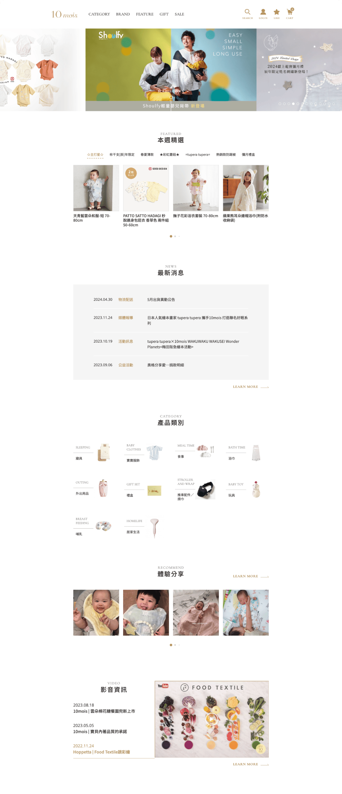
B版
創新活潑版本，延伸日本官網簡潔風格。
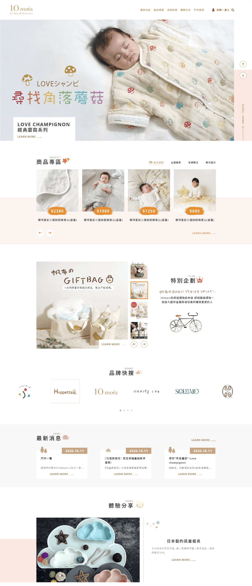
設計系統
顏色及字體
品牌主色系以暖色調貫穿全站，10 Mois 法語意為 「 10 個月 」：等待新生命誕生的寶貴時光，希望每位媽咪都能舒適幸福度過 10 個月零 10 天。
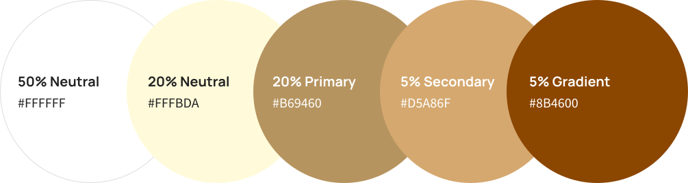
元件庫
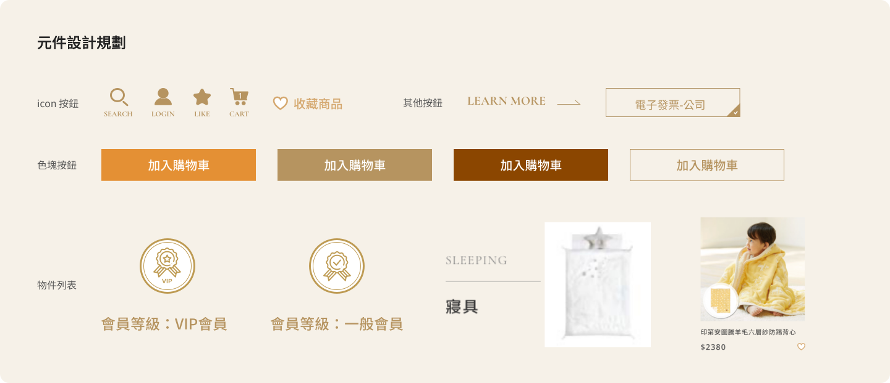
原型設計呈現
因考量版面長度問題，頁面會擷取重點功能擺放，不會整頁作品呈現，細節可點選最下方連結查看！
01
首頁
購物型網站資訊量龐大，但過多的裝飾元素會影響使用者的閱讀體驗。舊版網站不僅缺乏響應式設計，而且風格凌亂導致查找資訊變得困難，影響整體操作流程。新版網站則採取了簡潔明瞭的設計理念，移除所有多餘的裝飾，專注於產品圖片與文字的合理配置，提升網站的易讀性，能夠更輕鬆地找到所需資訊。
Before
-
過多裝飾元素影響閱讀性
-
無RWD響應式設計
-
產品不容易查找
-
品牌風格凌亂與日本官網不統一
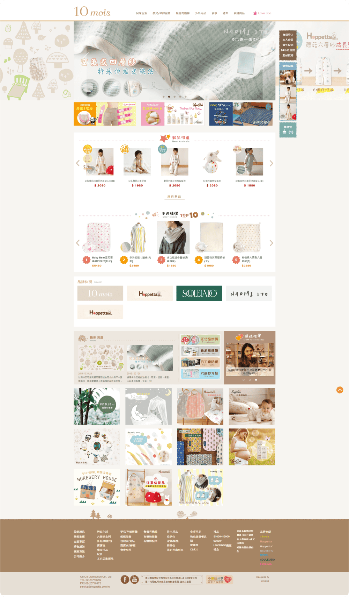
After
-
採用簡潔明瞭版面
-
視覺聚焦於產品圖片與文字
-
首頁新增真實用戶好評，提升品牌信任度。
-
將精選物件進行分類，提升搜尋便利性。
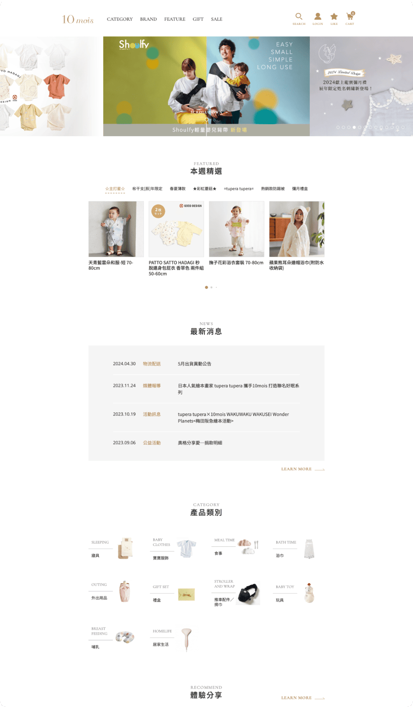
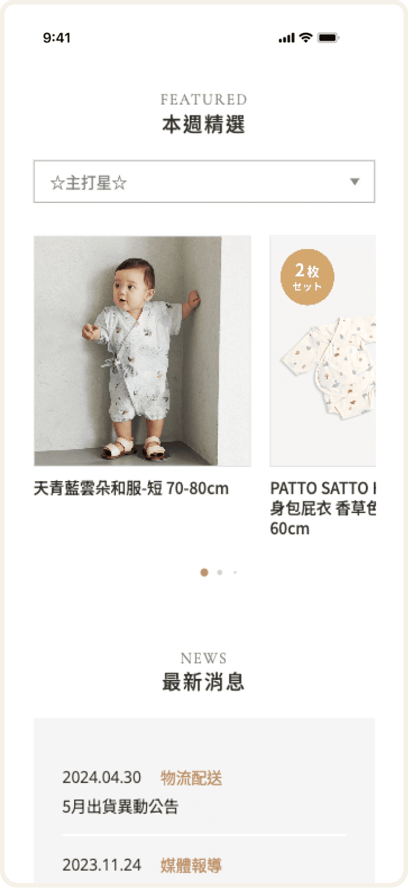
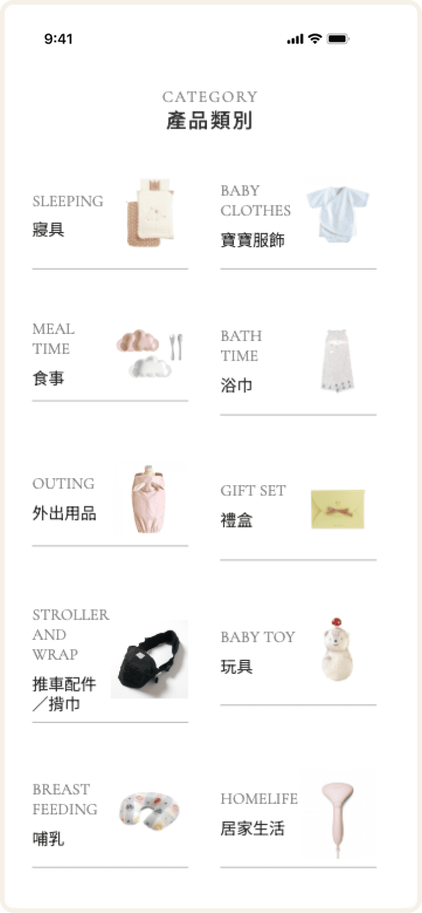
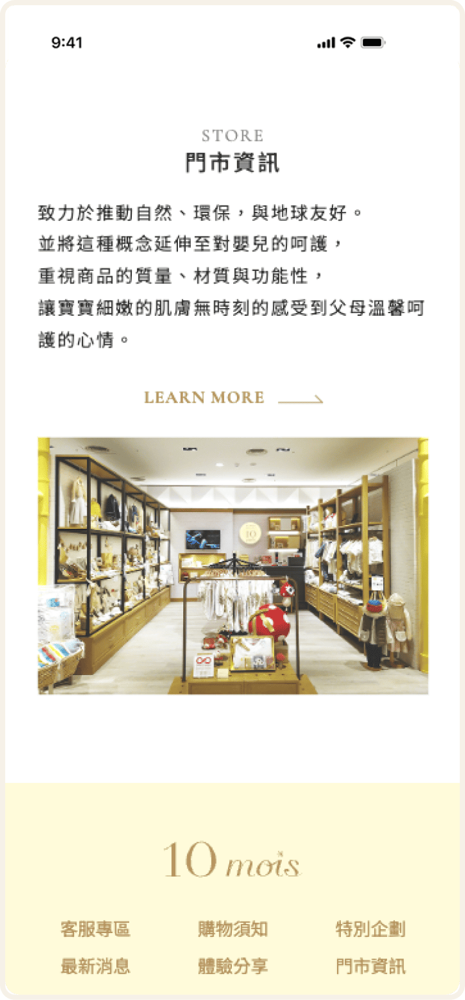
首頁行動裝置
將產品列表調整為與常見應用程式相似的操作方式，採用左右切換的設計。對於超出視窗的列表，將以裁切的方式呈現，並明確提醒用戶右側還有更多資料可供瀏覽。
02
產品介紹頁
舊頁面的白底框限制了視覺區塊，並減少了小螢幕上可用的寬度空間，新版移除白底設計，並新增介紹頁籤以便分類切換內容。這樣可以避免產品特色文案過長而導致用戶忽略規格及注意事項的重要資訊。 同時重新編排標籤配置，以減少用戶的視覺混淆。此外將影片放置於左側相簿中，以期提升影片的點閱率。
Before
-
白底框限制了視覺區塊
-
沒有禮盒及刺繡的選項
-
頁面過長沒有區分介紹事項
-
相片簿沒有辦法放影片
-
產品規格及注意事項容易被忽略
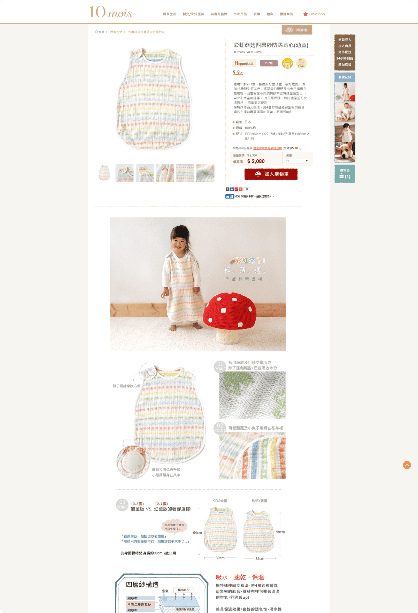
After
-
移除白底設計增加頁面寬度空間
-
新增頁籤以便分類切換內容
-
新增禮盒及刺繡的選項
-
相片簿新增影片功能，提升影片點閱率
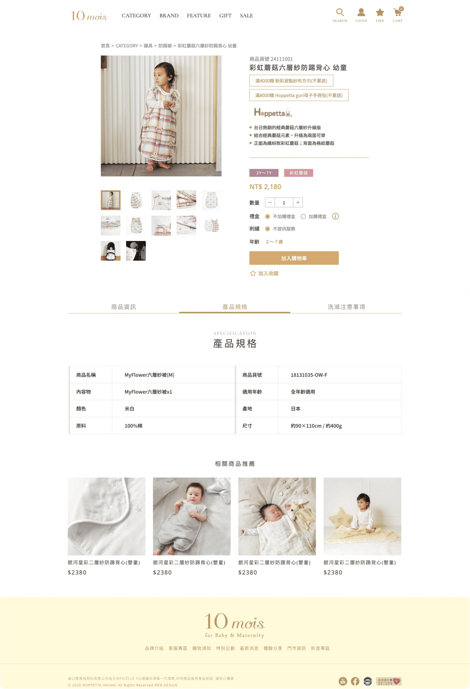
03
購物車
將步驟頁面整合為一頁式填寫，讓用戶在提交資料後即可完成下單動作。雖然有建議保留資料確認頁，以避免客戶填錯資料而引發後續爭議，但客服端收到的反饋顯示，多位用戶已表達對於頁面步驟過多的困擾。經過討論，我們決定取消確認頁流程，由客服團隊負責資料核對。
此外，物流欄位的流程也將根據程式建議調整位置順序，並使用下拉選單的方式切換運送選項，以提升用戶體驗。
04
會員中心
在訪談中客服反饋指出用戶在下單時經常遇到頁面當機的問題，導致誤關頁面而付款失敗，需重新下單。為了解決這一問題，我們決定在會員中心的歷史訂單中新增重新付款的機制。考慮到非會員無法解決付款問題，我們在第一次易用性測試後移除了非會員下單的功能，以確保所有用戶都能順利完成交易。
05
行動裝置
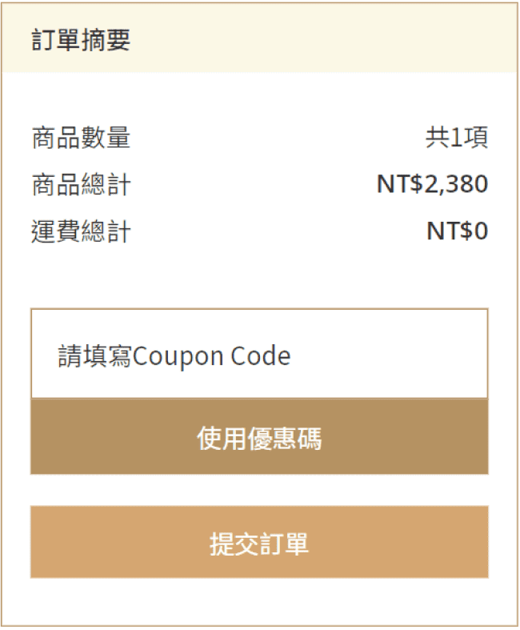
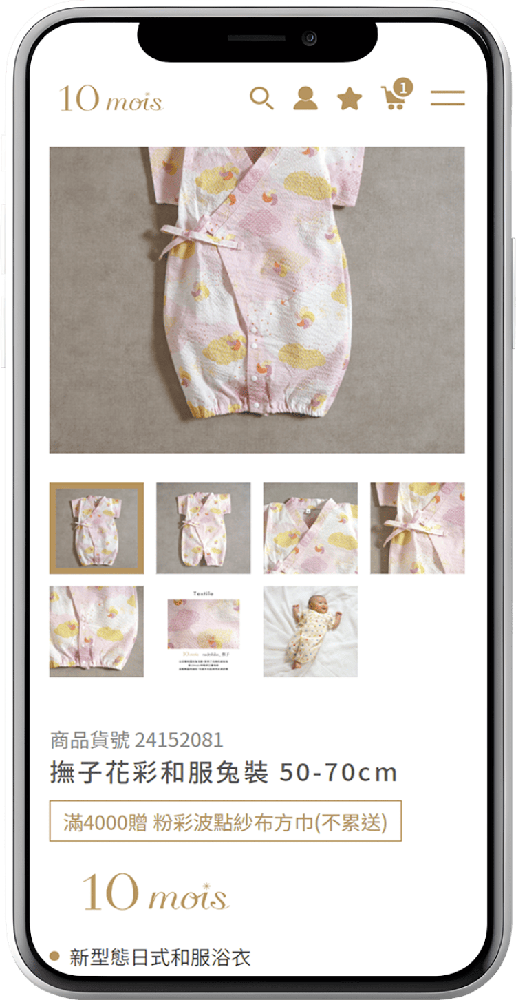
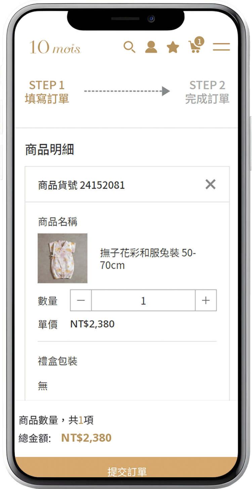
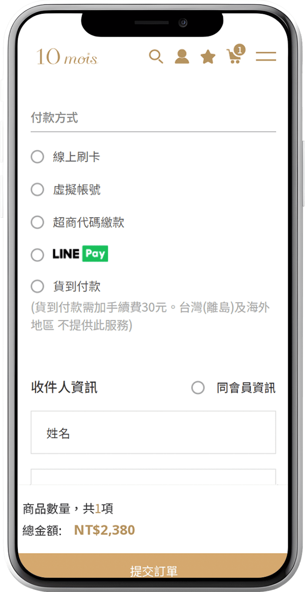
迭代調整
調整一：手機版產品圖將以一排顯示兩個列表，擴大可視範圍，讓用戶能夠一次瀏覽更多產品，進而加速閱讀速度。
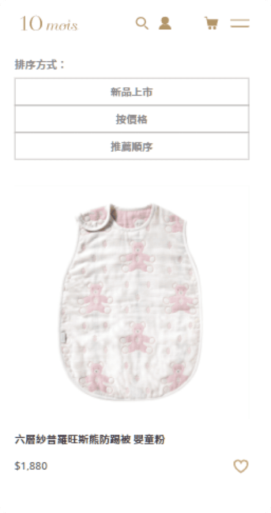
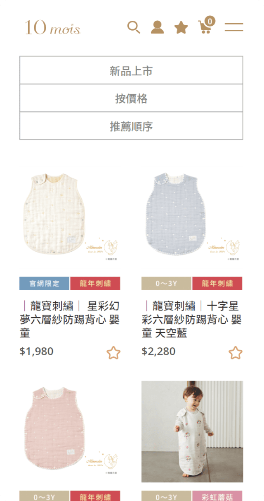
調整二：產品詳細頁新增體驗分享功能，讓用戶能夠查看其他顧客的好評推薦，從而提升購買意願。
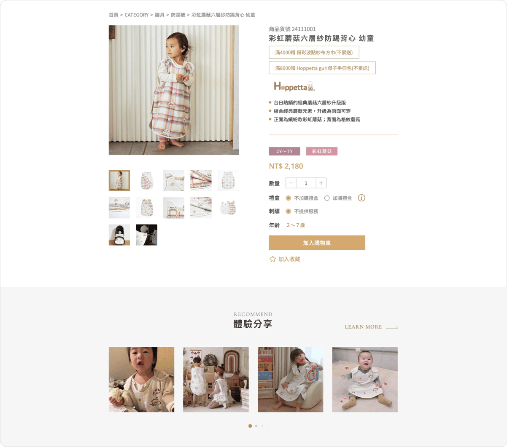
過程與收穫
過程與收穫
上線後，用戶的回饋大多為正向，流程優化後註冊與下單速度顯著提升，收到這些正面反饋，讓我們在過程中的辛苦轉化為成長的養分。
這是我第一次執行的電子商務網站專案，與一般形象網站的製作方式截然不同，整個過程就像一段旅程，有時道路清晰，讓我們能順利前行；有時因經驗不足而需要調整方向，這次合作經驗使我的成長曲線快速提升。
雖然受到專案時程的限制，許多更深層的研究未能完善執行，但我將透過私下進修來累積更多知識，並應用於未來的專案中。這是我需要努力的方向。
省思與調整
- 由於Hoppetta的規則要求用戶必須登入會員才能下單，雖然未登入時仍可將商品加入購物車，但客戶認為不需要設計購物車視窗預覽功能。未來，我們希望能將這一預覽功能應用於其他專案中，並透過易用性測試來了解其是否能為用戶帶來更好的體驗。
- 產品頁因介紹內容篇幅較長，將頁籤和下訂按鈕固定顯示，以提升操作的便利性和切換的流暢度，用戶在瀏覽時能更輕鬆地訪問所需信息，並迅速下單。
- 分析顯示社群登入較為便利使用率較高，順序可與信箱註冊欄位上下對調。